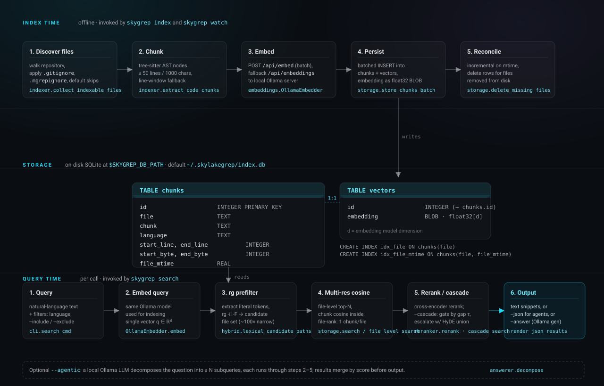
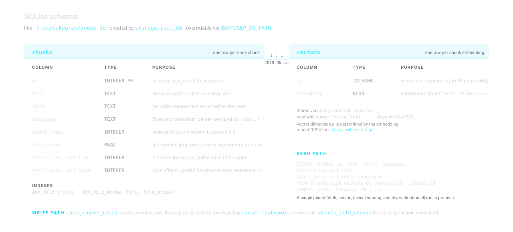
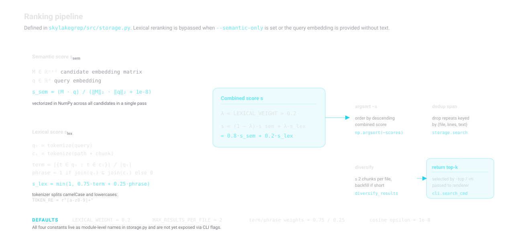
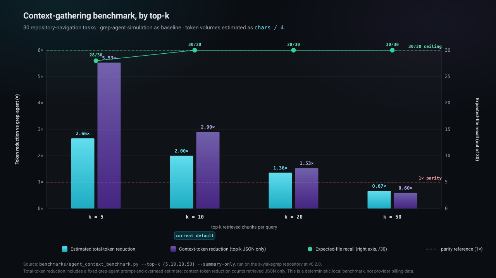

Build or refresh the local SQLite index. PATH defaults
to the current directory. --reset deletes the existing
database file before indexing. --incremental (default)
processes only new and modified files; --full reindexes
every discovered file.
v0.2.0 · MIT license
Semantic code search over a local index.
local-mgrep is a command-line tool that builds a SQLite
vector index from a repository's source files and answers natural-language
queries with line-cited snippets. Indexing, retrieval, and optional answer
generation run on the local host using a local Ollama server; no remote
service is required for the core workflow.
Python 3.9+
runs on macOS, Linux, Windows; SQLite is bundled with the standard library
Ollama HTTP
embeddings via
/api/embed; generation via /api/generate
Ranked snippets
file path · line range · language · score · text body
Installation
Install the CLI and a local embedding model.
Package install
pip install local-mgrepFrom source
git clone https://github.com/danielchen26/local-mgrep.git
cd local-mgrep
python3 -m venv .venv
source .venv/bin/activate
pip install -e .Ollama runtime
Install Ollama from ollama.com and pull at least one embedding model:
ollama pull mxbai-embed-large # default; 1024-dim
# or
ollama pull nomic-embed-text # smaller alternative
Pull a generation model only if --answer or --agentic
will be used:
ollama pull qwen2.5:3bQuickstart
Index a repository, then query it.
mgrep index /path/to/repo --reset
mgrep search "where is token refresh implemented?" -m 10
The first command walks the repository, chunks supported source files,
embeds each chunk via Ollama, and writes the result to
~/.local-mgrep/index.db. Subsequent runs re-index only
files whose modification time has changed and remove rows for files
that no longer exist.
For machine-readable output, add --json:
mgrep search "where is token refresh implemented?" -m 10 --jsonConcept · indexing model
Source files become line-attributed chunks with dense vectors.
Indexing is divided into five stages, all of which run in process and commit to a single SQLite file:
-
Discover. Recursively walk the repository, restricted
to a fixed set of supported source extensions. Apply the union of
.gitignore,.mgrepignore, and a built-in skip-list of build/cache/vendor directories. - Chunk. When a tree-sitter grammar is available for the language, walk the AST and emit nodes whose span is within configured size limits (≤ 50 lines and ≤ 1000 chars by default, with a minimum of 3 lines). Otherwise fall back to a deterministic line-window splitter.
-
Embed. Send chunks in batches to the Ollama
/api/embedendpoint; fall back to single-text/api/embeddingsrequests if the batch endpoint is unavailable on the running model. -
Persist. Insert one row into
chunksand one parallel row intovectors, keyed by the same integer id. Embeddings are stored as raw float32 BLOBs. -
Reconcile. On incremental runs, compare disk
mtimeagainstfile_mtimein the index. Reindex changed files; delete rows for files no longer present under the indexed root.
Supported languages
The extension-to-parser map lives in
local_mgrep/src/indexer.py:
.py, .js, .ts,
.tsx, .jsx, .go,
.rs, .java, .c,
.cpp, .h, .cs,
.rb, .php, .swift,
.kt, .scala, .vue,
.svelte. When a tree-sitter grammar package is missing
for a supported extension, the file still indexes via the line-window
fallback.
Concept · ranking
Hybrid scoring with capped per-file diversification.
A query produces a single ranked list. Scoring proceeds in four steps:
- Cosine. Embed the query with the same model used at index time and compute cosine similarity against the candidate embedding matrix in a single NumPy pass.
-
Lexical adjustment. When the raw query text is
available and
--semantic-onlyis not set, compute a token-and-phrase overlap score against the chunk and its file path, then take a weighted sum:0.8 · cosine + 0.2 · lexical. -
Span deduplication. Drop later candidates whose
(file, start_line, end_line, text)tuple has already been observed. - Diversification. Cap the number of accepted candidates per file at 2 before filling the remaining top-k slots from the overflow.
The numerical defaults (LEXICAL_WEIGHT = 0.2,
MAX_RESULTS_PER_FILE = 2, term/phrase weights
0.75/0.25) are module-level constants in
local_mgrep/src/storage.py. They are not exposed
through CLI flags in this release.
Concept · output
Three rendering modes.
Human-readable (default)
Plain text records, one per result, ordered by descending score:
=== local_mgrep/src/storage.py:197-271 (score: 0.824) ===
def search(conn, query_embedding, top_k=10, …):
query_vec = np.array(query_embedding, dtype=np.float32)
…JSON (--json)
Stable output for scripts and coding agents. See JSON schema.
Synthesized answer (--answer)
The retrieved snippets are passed as context to a local Ollama generation model along with a fixed system prompt. The model is instructed to cite file paths and line ranges and to refrain from asking follow-up questions. The original ranked sources are still printed below the synthesized answer.
--agentic precedes the search with an LLM step that
decomposes the question into up to --max-subqueries
related queries; each is searched independently and the results are
merged by score.
System · architecture
Three lanes: index time, storage, query time.

mgrep index or
mgrep watch. Storage is the only shared state between the two
lanes. Query time runs per call to mgrep search.
System · storage
Two SQLite tables joined 1-to-1.

storage.init_db. The
chunks table holds source location and verbatim text;
vectors holds the embedding as a binary float32 buffer.
The two tables are kept in lockstep at write time
(store_chunks_batch inserts both rows in the same
transaction) and joined on id at read time. There is no
declared foreign key constraint; the join is enforced by application
code.
System · ranking
Cosine, lexical adjustment, dedup, diversify.

Reference · CLI
Four commands.
Retrieve ranked snippets. Options are summarized below.
| Flag | Default | Effect |
|---|---|---|
-m, -n, --top | 5 | Number of final results. |
--json | off | Emit results as a JSON array; suppresses human formatting. |
--answer | off | Synthesize an answer from retrieved snippets via Ollama. |
--content / --no-content | on | Show or hide snippet bodies in human output. |
--language | — | Restrict to one or more language keys; repeatable. |
--include | — | Glob; only paths matching at least one pattern are kept; repeatable. |
--exclude | — | Glob; paths matching any pattern are dropped; repeatable. |
--semantic-only | off | Skip lexical reranking; rank by cosine similarity alone. |
--agentic | off | Decompose the query into subqueries via Ollama before search. |
--max-subqueries | 3 | Upper bound on agentic subqueries. |
Print total chunk count and total indexed file count.
Poll PATH every N seconds (default 5).
Newly added files are indexed; modified files are reindexed; files
missing from disk are removed from the index.
Reference · configuration
Environment variables.
Configuration is read from environment variables on every invocation; there is no config file. Defaults assume a local Ollama server on the default port.
| Variable | Default | Effect |
|---|---|---|
OLLAMA_URL |
http://localhost:11434 |
Base URL of the Ollama server used for embeddings and (optional) generation. |
OLLAMA_EMBED_MODEL |
mxbai-embed-large |
Embedding model name. Must be the same at index time and query time. |
OLLAMA_LLM_MODEL |
qwen2.5:3b |
Generation model used by --answer and --agentic. |
MGREP_DB_PATH |
~/.local-mgrep/index.db |
SQLite index location. Use distinct paths to keep per-project indexes. |
Note
Switching OLLAMA_EMBED_MODEL after indexing produces a
dimension or semantic mismatch and will not return useful results.
Reindex with --reset when the embedding model changes.
Reference · output schema
JSON shape.
--json writes a JSON array to stdout. Each element has
the following fields:
[
{
"path": "local_mgrep/src/storage.py",
"start_line": 197,
"end_line": 271,
"language": "python",
"score": 0.824,
"snippet": "def search(conn, query_embedding, top_k=10, …): …"
}
]- path
- Absolute file path on the indexing host.
- start_line, end_line
- Inclusive 1-based line range of the chunk within
path. - language
- Tree-sitter language key, or the extension-derived key if the file used the fallback splitter.
- score
- Combined score (cosine plus lexical adjustment unless
--semantic-only). - snippet
- Verbatim source text of the chunk.
Evaluation · benchmark
Deterministic context-gathering benchmark.
The repository ships a deterministic benchmark in
benchmarks/agent_context_benchmark.py. It compares
two ways of assembling search context for a fixed set of 30 repository
navigation tasks:
- a grep-agent simulation that performs exact-token searches and returns matching line windows; and
- local-mgrep issuing a single semantic query per task and returning the top-k JSON snippets.
Token volumes are estimated as chars / 4.

Reproducing the numbers
.venv/bin/python benchmarks/agent_context_benchmark.py --top-k 5 --summary-only
.venv/bin/python benchmarks/agent_context_benchmark.py --top-k 10 --summary-only
.venv/bin/python benchmarks/agent_context_benchmark.py --top-k 20 --summary-only
.venv/bin/python benchmarks/agent_context_benchmark.py --top-k 50 --summary-onlyTabular summary
| top-k | recall | total-token reduction | context-token reduction |
|---|---|---|---|
| 5 | 28 / 30 | 2.66× | 5.53× |
| 10 | 30 / 30 | 2.00× | 2.90× |
| 20 | 30 / 30 | 1.36× | 1.53× |
| 50 | 30 / 30 | 0.67× | 0.60× |
Top-k 10 is currently the only setting in this table where local-mgrep matches the grep-agent baseline on recall while reducing the estimated total-token volume below 1×. See the 0.2.0 capability guide and the benchmark protocol for the underlying definitions.
Evaluation · limitations
What the current data does and does not show.
- The benchmark measures retrieved context and an estimated total-token figure built from a fixed grep-agent overhead model. It does not measure provider billing or wall-clock token consumption of any specific coding agent.
- Answer-quality is not yet evaluated against a rubric. The synthesized answer mode is offered, but its outputs are not scored in this benchmark.
- Retrieval quality is bounded by the embedding model in use. Results are not directly comparable across embedding models and a stored index must be rebuilt when the model changes.
- The lexical reranker uses simple token and phrase overlap; it does not implement BM25, a cross-encoder rerank, or multi-vector retrieval.
-
The task set in
benchmarks/agent_context_benchmark.pyis specific to this repository. Results on other codebases may differ and should be measured against an independent task set.
Roadmap
Planned work.
- MCP server and editor integrations for use inside coding agents.
- Multi-repository benchmark suite with an independent task set.
- Configurable second-stage local reranker (token blend or local cross-encoder) over a larger candidate pool.
- Expanded ignore semantics and language coverage.
- Packaged benchmark fixtures so third parties can reproduce numbers without copying internal scripts.